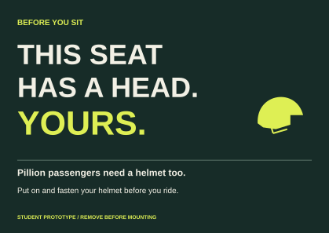

The argument
Research, audience insight, three concepts, selection, creative strategy, production and validation.
Full report PDFEditable PowerPointSpeaker notesA campaign that puts the pillion helmet reminder on the seat the passenger is about to occupy. Two seats. Two helmets. Both fastened.
Open the presentationPresentation PDF
Research, audience insight, three concepts, selection, creative strategy, production and validation.
Full report PDFEditable PowerPointSpeaker notesFinished hero card, A3 poster, vertical social artwork and an illustrated placement mockup.
A6 cardA3 posterSocial artworkContext mockupA captioned, controllable 15-second motion prototype. No sound, unsafe riding or simulated crash.
Play prototypePrint guidanceComprehension sheetPilot tally sheet